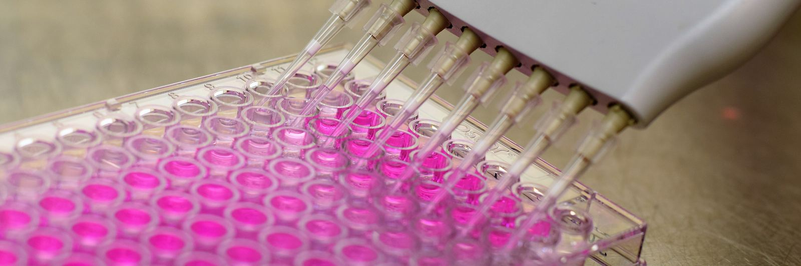
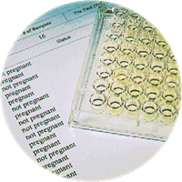

How your results are read
Your report puts each animal in one of three groups: pregnant, open or recheck. This page explains each one, what the veterinarian adds, and what a blood test cannot tell you.
The vet reads your results
Samples that reach the lab by Wednesday are reported Thursday by email, fax or phone, whichever you mark on the form.
What Thursday's report shows
- PregnantProtein present on the day she was sampled.
- OpenNo protein. She can go back on next week's breeding list.
- RecheckThe reading fell between the two ranges. It can point to a pregnancy in trouble, an animal sampled too early, or a cow still too close to calving.
What the veterinarian adds
- Every plate is read by the lab's veterinarian, Dr. Glenn Pearson.
- A recheck usually comes with a note on when to sample her again.
- Every testing client gets Dr. Pearson's troubleshooting and support with their results. He is only an email or phone call away.
Advanced Dairy Diagnostics & Consulting, LLC
Pregnancy test results
| Tube | Animal ID | Result | Note |
|---|---|---|---|
| 1 | 4412 | Pregnant | Protein present on the day sampled. |
| 2 | 4418 | Open | No protein. Back on the breeding list. |
| 3 | 4425 | Recheck | Between the ranges. See the note on when to sample her again. |
| 4 | 4431 | Pregnant | Protein present on the day sampled. |
Good to know
- A pregnant result is true for the day the blood was drawn. Some pregnancies are lost after that.
- The maker of BioPRYN suggests testing cows again at 70 to 80 days if they were first tested at 28 days, to catch early losses.
- The test is more than 99% accurate in detecting open cows (BioTracking's published figure), with less than 1% showing false-open results.
- Cows should be at least 90 days since calving as well as 28 or more days from breeding, so the protein from the last pregnancy has cleared.
From the plate to the report

The Enzyme-Linked Immuno-Sorbent Assay (ELISA) laboratory process detects the presence of a protein called Pregnancy Specific Protein B (PSPB). PSPB is produced by the developing placenta and begins circulating in the blood of pregnant cattle as early as 3 weeks of gestation. The test waits until 28 days so the level is high enough to call with confidence.
Each well on the plate is one animal. Every plate is read by the lab's veterinarian, Dr. Glenn Pearson, and each animal is reported pregnant, open or recheck.
In addition, Early Embryonic Death (EED) can sometimes be detected by the blood test, since subnormal levels of PSPB may indicate a pregnancy in trouble.
Rechecks you can head off before you draw
Two of the reasons a recheck comes back are about timing: an animal sampled too early, or a cow still too close to calving (at least 90 days, as above). Before you draw, check the days since breeding:
- Cows and bison: 28 or more days after breeding.
- Virgin heifers: 25 or more days after breeding.
- Goats and sheep: 30 or more days after breeding.
- For does and ewes that kidded or lambed recently, ask when you call.
BVD PI results
A persistently infected (PI) animal was infected before birth, sheds the virus for life, and is found with one ear notch or blood sample. BVD PI testing is for cattle and bison; goat and sheep herds should call the lab and ask about disease monitoring instead.
When an animal tests positive:
- If a calf tests positive, test the dam too. A PI dam always produces a PI calf, though most PI calves come from dams that were only briefly infected during pregnancy.
- A positive animal is isolated and either retested or removed on the veterinarian's advice.
When a result raises a question
As a client of ADDC, you automatically receive the expert guidance of Dr. Pearson. With more than 40 years of dairy and beef production medicine experience, Dr. Pearson is only an email or phone call away from helping you with timely intervention and up-to-date corrective advice.
Call (715) 653-2201, Monday to Friday, 8 a.m. to 4 p.m. Central, or email info@dairydoctor.com. Have the report and the animal ID in front of you.
If a tube breaks in transit, call the lab. We will tell you which animals need a new sample.
Herds that want more than that hire him as their consultant. See what herd health consulting covers.
For your herd veterinarian
If your herd veterinarian asks how these results were reached, this is the short version.
- The test is BioPRYN, an ELISA that detects Pregnancy Specific Protein B (PSPB), a protein made by the developing placenta.
- Each sample is at least 2cc of whole blood in a red-top tube, drawn with a new needle for every animal: from the tail vein in cattle, and from the jugular vein in goats and sheep.
- Each animal is reported pregnant, open or recheck. The sampling windows and the published accuracy figure are listed above.
- Every plate is read by Dr. Glenn Pearson, DVM, a 1985 graduate of the University of Illinois College of Veterinary Medicine with more than 40 years of dairy and beef production medicine experience.
A herd veterinarian with a question about a result can call the lab at (715) 653-2201.